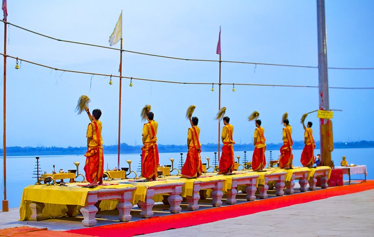
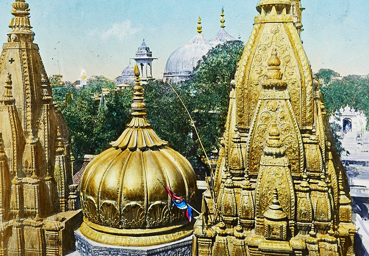

Varanasi (also known as Benares, Banaras, Benaras, Kashi, and Kasi) is a Hindu holy city on the
banks of the river Ganga (Ganges) in Uttar Pradesh.
Named after the Hindu goddess Ganga, the Ganges River is one of the most revered natural
sites
in
India. The river extends southeast from the Himalayas in the north to the Bay of Bengal.
Between
400 million and 600 million people rely on the Ganges River to provide water for daily
bathing
and drinking.
Hindus come to Varanasi from all around the world to purify themselves in the holy Ganges
water
and perform rituals along the dozens of ghats along the river. For tourists, the river helps
provide a fixed point of orientation for navigating around the city, and you'll no doubt
spend
lots of time sightseeing and watching life happen around the Ganges.
Consider waking up early and taking a sunrise cruise along the river — negotiate with one of
the
countless boatman hanging out along the ghats.
In the afternoon or early evening, one of the top things to do in Varanasi is purchase a
small
floating offering filled with fresh flowers and a candle, and release it onto the Ganges
River.
The blissful experience will connect you more deeply with Hindu culture and stay in your
mind
for years to come.

When it comes to famous places in Varanasi, the city's southernmost main ghat regularly tops
the
list. Assi Ghat's star attraction is a Shiva lingam (phallic representation of the Hindu
deity)
beneath a sacred fig tree. It draws hundreds of pilgrims every day, who come to worship Lord
Shiva after rinsing in the Ganges River.
Feeling a little stiff from traveling? Swing by Assi Ghat at sunrise, when you can get your
downward-facing dog on with dozens of others during morning yoga accompanied by live music
every
day. Tourists can also see another Ganga Aarti performance here in the evening, which is
slightly smaller and more intimate than the one at Dasaswamedh Ghat.
Plumes of smoke swirl toward the sky at Manikarnika Ghat. No, it's not from a factory — it's
from the perpetual cremations that happen on this ghat. Hindus believe that Manikarnika Ghat
is
one of the most auspicious places for the departed to reach moksha (emancipation from the
cycle
of spiritual rebirth). The funeral pyre at this ghat burns 24/7, and around 100 cremations
take
place every day.
Priests or guides frequently offer to lead tourists through the fascinating ghat, however
some
can be aggressive in their demands for money. You may see doms (members of an untouchable
caste)
carrying cloth-wrapped bodies on makeshift stretchers, along with piles of firewood stacked
up,
ready to feed the pyre.
You may also be offered the chance to see a cremation up close — for a fee, of course. While
profound, the experience is not for the faint of heart, nor is it a tourist attraction in
the
traditional sense. Know your limits, be respectful, and avoid taking photos of the funerals,
mourners, and the departed.
Hot tip: If you're interested in the ritualistic cremations, but can't stomach the idea of
seeing them up close, consider passing by Manikarnika Ghat on a boat tour along the Ganges
River. The distance dampens the effect while still giving tourists a sense of what's
happening
in this important place.

Hindu pilgrims and tourists alike travel for thousands of miles to reach the Shri Kashi
Vishwanath Temple, a sacred attraction around four kilometers from the Varanasi Junction
railway
station near the Manikarnika Ghat. The impressive structure, dedicated to the Hindu deity
Shiva,
has earned the nickname "The Golden Temple" for its striking spire — plated in some 800
kilograms of pure gold. The distinctive design of this temple has gone on to inspire the
architecture of hundreds of other temples across India.
Strict security measures around the complex require that tourists stash their
cameras, phones,
bags, and other belongings in a rentable locker nearby. Expect to ditch your shoes and wait
in
line with hundreds of other visitors, all eager to touch the 60-centimeter-tall,
sin-absolving
Shiva lingam in a silver alter. It's an intense, yet rewarding experience.
Hot tip: Skip this attraction on Hindu holidays, when devotees wait in line for up to two
full
days to enter the temple.